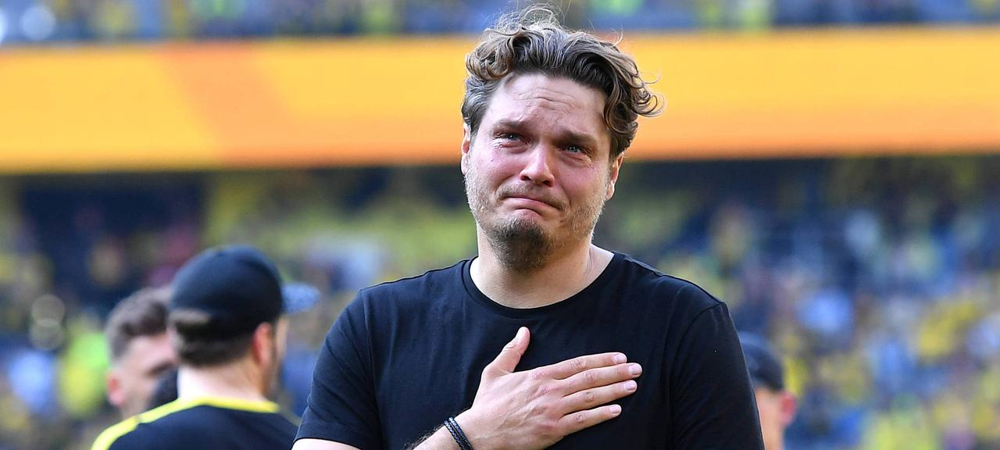

Trainer von Borussia Dortmund
Aktueller Trainer

Edin Terzic
Edin Terzic übernahm im Dezember 2020 das Traineramt bei Borussia Dortmund. Unter seiner Führung gelang es dem Team, den DFB-Pokal 2021 zu gewinnen. Terzic ist bekannt für seine leidenschaftliche Herangehensweise und seine Fähigkeit, junge Spieler zu fördern.
Legende Jürgen Klopp

Jürgen Klopp
Jürgen Klopp war von 2008 bis 2015 Trainer von Borussia Dortmund. Unter seiner Führung gewann der Club zwei Bundesliga-Titel und erreichte das Finale der UEFA Champions League 2013. Klopp ist bekannt für seinen "Heavy Metal"-Fußball und seine enge Bindung zu den Fans.